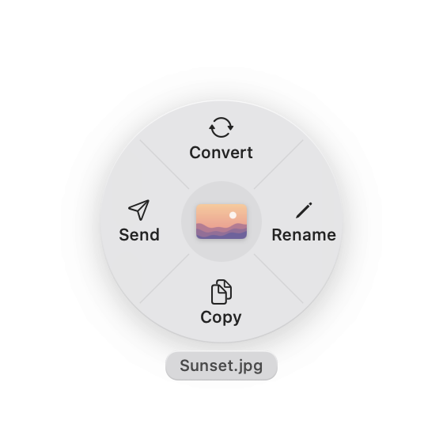
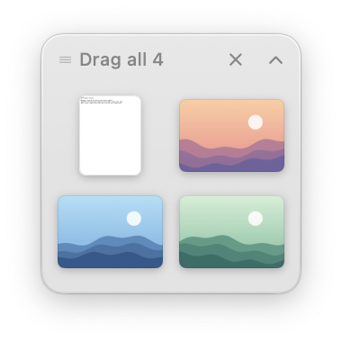
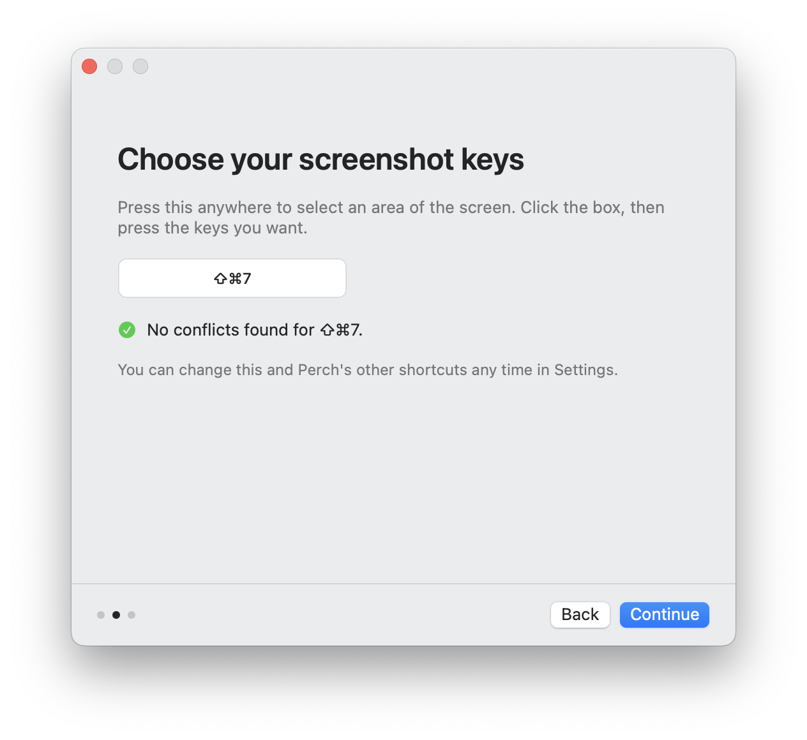

Downloads and screenshots, ready to drag.
Perch catches downloads and screenshots in two small trays on your Mac. While dragging a file, shake the pointer to convert, rename, copy, or send it.
Free · macOS 14 or later
Shake to open the action ring
The ring opens under the file you're holding. Rest on a section to see its choices, then let go on one.

Convert, then PDF. Sunset.pdf is saved next to the original and joins it in the tray.
Rename, then Date. Perch puts today's date in front and asks you to confirm. For a download it renames its own copy, and the original keeps its name.
Copy, then Path. The file's full location is on your clipboard, ready to paste.
Send, then Share. The macOS Share menu opens for the file, with whatever your Mac offers there.
Take three screenshots. Send them in one drag.
Each capture waits in the Screenshot Tray while you take the next. Drag one out or drag them all into a message or document. The rest are saved to your screenshot folder.
The File Tray shows up when a file is in your hand.
It appears at the top right when a download finishes, or the moment you start dragging a file from Finder, your browser or most other apps. Drop files on it to keep them close, then drag them back out where they're needed.

Private
Perch has no accounts and no analytics, and it never connects to the internet. Privacy policy
Any recent Mac
One download runs on Apple Silicon and Intel, on macOS 14 Sonoma or later.
Your shortcuts
Choose the keys for taking a screenshot and for showing each tray.
Setup is one shortcut and one permission
- Open Perch. Drag it to Applications and open it. A short setup window walks through the next two steps.
- Pick your screenshot shortcut. It starts as ⇧⌘7 and you can change it to any keys. If macOS already uses them, Perch says so and shows where to switch the other one off, so one press never takes two screenshots.
- Allow Screen Recording. macOS won't let any app capture the screen without this permission. Perch uses it only for the screenshots you take, and it never records video.

Questions
Is Perch free?
Yes.
What does it need permission for?
Screen Recording, to take screenshots. macOS will also ask whether Perch may see your Downloads folder, so new downloads can appear in the File Tray, and, only if you convert a PowerPoint file, whether it may ask Keynote to export it. Perch doesn't use Accessibility or Input Monitoring.
One press of my screenshot keys takes two screenshots. Why?
macOS lets you assign keys to its own screenshot tools, and if those match Perch's, both run. Open Perch's menu and choose Welcome & Setup… to pick different keys, or turn the macOS one off in System Settings › Keyboard › Keyboard Shortcuts › Screenshots.
Which Macs does it run on?
Any Mac with macOS 14 Sonoma or later, on Apple Silicon or Intel.
How do I uninstall it?
Quit Perch from its menu-bar icon and drag it from Applications to the Trash. To remove its saved data too, delete the Perch folder in ~/Library/Application Support.
I found a bug or have an idea.
Choose Send Feedback… in Perch's menu, or open an issue on GitHub.
Give your files somewhere to land.
Download for MacFree · macOS 14 or later